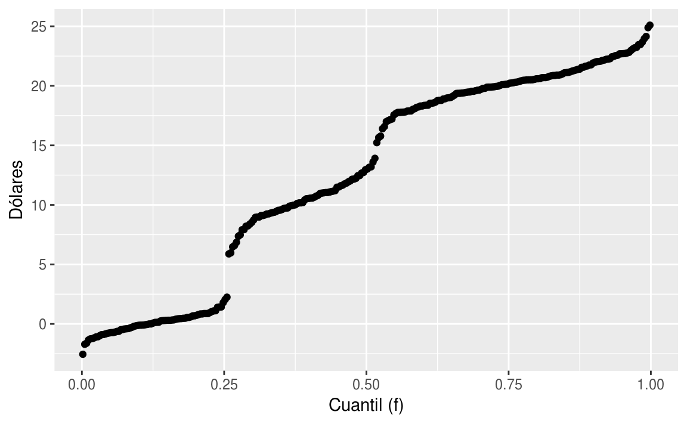
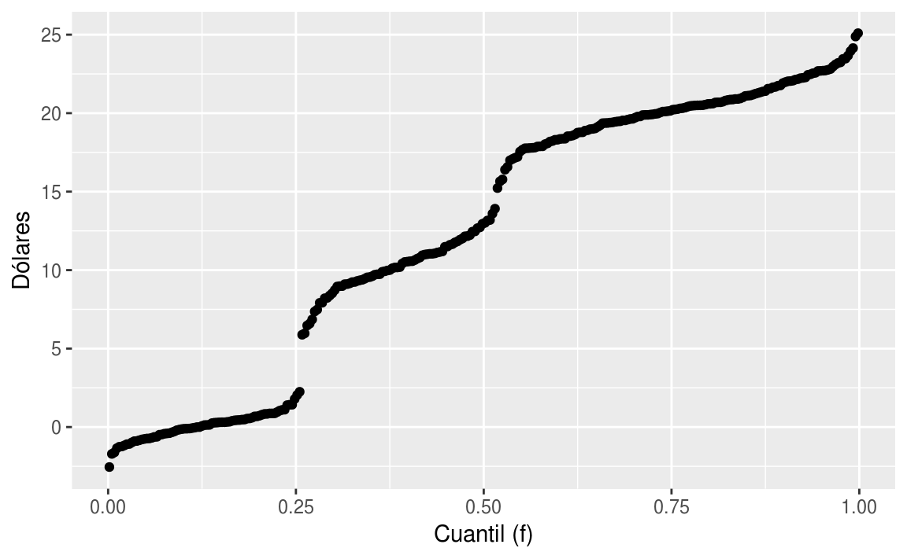

Clase 4 Teorema del Límite Central
A continuación discutiremos el Teorema del Límite Central (CLT), el cual nos ayuda a realizar cálculos importantes relacionados con la probabilidad de las cosas. Se utiliza con frecuencia en la ciencia para probar hipótesis estadísticas.
Para utilizarlo, tenemos que hacer diferentes supuestos. Sin embargo, si los supuestos son verdaderos, entonces podemos calcular probabilidades exactas de eventos mediante el uso de una fórmula matemática muy sencilla.
4.1 La distribución de la media
El Teorema del Límite Central
El CLT es uno de los resultados matemáticos más utilizados en la ciencia. Nos dice que cuando el tamaño de la muestra es grande, la media \(\bar{Y}\) de una muestra aleatoria sigue una distribución normal con centro en la media poblacional \(\mu_Y\) y con desviación estándar igual a la desviación estándar de la población \(\sigma_Y\) dividida por la raíz cuadrada del tamaño de la muestra \(\sqrt{N}\). Nos referimos a la desviación estándar de la distribución de una variable aleatoria como el error estándar de la variable aleatoria.Si tomamos muchas muestras de tamaño \(N\), entonces la cantidad:
\[ \frac{\bar{Y} - \mu}{\sigma_Y/\sqrt{N}} \]
se aproxima con una distribución normal con centro en 0 y con desviación estándar 1.
Ahora nos interesa la diferencia entre dos medias muestrales. Aquí, de nuevo, un resultado matemático nos puede ayudar. Si tenemos dos variables aleatorias \(X\) y \(Y\) con medias \(\mu_X\) y \(\mu_Y\) y varianzas \(\sigma_X\) y \(\sigma_Y\) respectivamente, entonces tenemos el siguiente resultado: la media de la suma \(Y + X\) es la suma de las medias \(\mu_Y + \mu_X\). Esto implica que la media de \(Y - X = Y + aX\) con \(a = -1\), es \(\mu_Y - \mu_X\).
Sin embargo, el siguiente resultado quizás no sea tan intuitivo. Si \(X\) y \(Y\) son independientes entre sí, entonces la varianza de \(Y + X\) es la suma de las varianzas \(\sigma_Y^2 + \sigma_X^2\). Esto implica que la varianza de la diferencia \(Y - X\) es la varianza de \(Y + aX\) con \(a = -1\) que es \(\sigma^2_Y + a^2\sigma_X^2 = \sigma ^ 2_Y + \sigma_X ^ 2\). Así que la varianza de la diferencia es también la suma de las varianzas. Si esto parece un resultado contraintuitivo, recordemos que si \(X\) y \(Y\) son independientes entre sí, el signo realmente no importa. Finalmente, otro resultado útil es que la suma de variables normales (mutuamente independientes) es otra vez normal.
El cociente
\[ \frac{(\bar{Y}-\bar{X}) - (\mu_Y - \mu_X)}{\sqrt{\frac{\sigma_X^2}{M} + \frac{\sigma_Y^2}{N}}} \]
se aproxima por una distribución normal centrada en 0 y con desviación estándar 1. Usando esta aproximación, el cálculo de probabilidades es simples porque conocemos la proporción de la distribución bajo cualquier valor. Por ejemplo, sólo el 5% de estos valores son mayores que 2 (en valor absoluto):
pnorm(-2) + (1 - pnorm(2))
#> [1] 0.04554.2 ¿De dónde proviene la distribución normal?
En 1894, Francis Galton inventó lo que ahora conocemos como tablero de Galton, para ilustrar el Teorema del Límite Central, y en particular, que la distribución binomial es una aproximación a la distribución normal. El tablero consta de una tablero vertical con varias filas de clavos acomodados en forma de arreglo triangular. En la parte inferior hay varias cubetas para cada posible camino que forman los clavos en el tablero. Se deja caer canicas desde la parte superior, las cuales van botando, rebotando y saltando, aleatoriamente, y van depositándose, a medida que caen, en las cubetas de la parte inferior.
Las canicas chocarán con el primer clavo teniendo una probabilidad de \(1/2\) de ir a la izquierda o la derecha. A medida que caen, cada canica tiene más caminos a donde ir, es decir más posibilidades para desviarse a la izquiera o a la derecha. A lo largo de esta estructura, las canicas toman caminos aleatorios hasta caer en alguna de las cubetas. Es consecuencia de las leyes del universo que está sostenido por una tela sobre la cual subyace lo aleatorio, que las canicas caen con mayor probabilidad en las cubetas que están al centro, mientras que la probabilidad de que caigan en cubetas más alejadas es cada vez menor cuando la canica se aleja más y más de la cubeta del centro.

La primera versión de este teorema fue postulada por el matemático francés Abraham De Moivre que, en un notable artículo publicado en 1733, usó la distribución normal para aproximar la distribución del número de soles resultante de muchos lanzamientos de una moneda justa. Este hallazgo estaba muy por delante de su tiempo y permaneció en el olvido hasta que el famoso matemático francés Pierre-Simon Laplace lo rescató de la oscuridad en su monumental obra Théorie analytique des probabilités, publicada en 1812. Laplace extendió el hallazgo de De Moivre al aproximar la distribución binomial en general con la distribución normal. El teorema en su forma más general fue demostrado por primera vez por el príncipe de las matemáticas, Carl Friedrich Gauss, en 1813. Hoy en día es conocida en su honor como distribución Gaussiana, cuando en su tiempo no era más que la ley del error.
Supongamos que \(x\) y \(y\) son errores independientes cometidos al azar cuando se han hecho dos mediciones independientemente una de la otra.

Por lo tanto, \[ yf^\prime(x)f(y) = x f^\prime(y)f(x). \] Se tiene que \[ \dfrac{f^\prime(x)}{f(x)x} = \dfrac{f^\prime(y)}{f(y)y}, \] para toda \(x\) y \(y\). Como \(x\) y \(y\) son mediciones arbitrarias, esto implica que \[ \dfrac{f^\prime(x)}{f(x)x} \] debe ser constante. Por lo tanto, \[ \displaystyle{\int{\dfrac{f^\prime(x)}{f(x)x}}\,dx = \int{c \,dx}}. \] Multiplicando por \(x\), \[ \displaystyle{\int{\dfrac{f^\prime(x)}{f(x)}}\,dx = \int{cx\, dx}}. \] Por lo cual, \[ \mbox{ln}f(x) = c\cdot \dfrac{x^2}{2} + c^\prime. \]
4.2.1 ¿Qué signo tiene c?
Vemos que \[ f(x) = Ae^{c\frac{x^2}{2}}, \] donde \(A=e^{c^\prime}\). Como \(f(x)\) es la función de densidad de este fenómeno de errores independientes entonces se debe cumplir que: \[ 1 = \displaystyle{\int f(x)\, dx}, \] y podemos concluir que \(c<0\), para que \(f(x)\) pueda ser función de densidad. Integramos: \[ A \displaystyle{\int{e^{c\cdot \frac{x^2}{2}}}\, dx}. \] Sea \(u=\sqrt{-\dfrac{c}{2}}x\), entonces \(du = \sqrt{-\dfrac{c}{2}}\,dx\). Por lo cual, \[ 1 = A\sqrt{-\dfrac{2}{c}} \displaystyle{\int_{-\infty}^{\infty}{e^{-u^2}}\,du = A \sqrt{-\dfrac{2}{c}} \cdot \sqrt{\pi}}. \] Para obtener lo anterior, se desea demostrar que \[ \boxed{\int_0^\infty{e^{-x^2}dx} = \dfrac{\sqrt{\pi}}{2}.} \] Sea \[ I = \int_{-\infty}^\infty{e^{-x^2}dx}, \] entonces \[ I^2=\left(\int_{-\infty}^\infty{e^{-x^2}dx}\right)\left(\int_{-\infty}^\infty{e^{-y^2}dy}\right)=\int_{-\infty}^\infty{\int_{-\infty}^{\infty}{e^{-(x^2+y^2)}dxdy}}. \] Si \(x=r\mbox{cos}(\theta)\) y \(y=r\mbox{sen}(\theta)\) entonces \(x^2+y^2=r^2\) y se puede demostrar que \(dxdy=rd\theta dr\). Por lo tanto, \[\begin{eqnarray*} I^2&=&\int_{-\infty}^\infty{\int_{-\infty}^{\infty}{e^{-(x^2+y^2)}dxdy}}\\ &=&\int_{0}^\infty{\int_{0}^{2\pi}{re^{-r^2}d\theta dr}}\\ &=&-\pi\int_{0}^{\infty}{-2re^{-r^2}dr}\\ &=&-\pi e^{-r^2}{\biggr\rvert_{0}^{\infty}}\\ &=&\pi. \end{eqnarray*}\]Por lo cual, \(I=\sqrt{\pi}\). Como \(e^{-x^2}\) es una función simétrica alrededor de \(0\), entonces se tiene, finalmente, que \[ \int_{0}^{\infty}{e^{-x^2}dx}=\dfrac{1}{2}\int_{-\infty}^{\infty}{e^{-x^2}dx}=\dfrac{\sqrt{\pi}}{2}. \]
Finalmente, \[ 1 =A \sqrt{-\dfrac{2}{c}} \cdot \sqrt{\pi}, \] y despejando \(A\), obtenemos que \[ A = \sqrt{-\dfrac{c}{2\pi}}. \]
Sean \(\mu\), el valor esperado de \(X\), y \(\sigma^2\) la varianza de \(X\), \(E(X)\) y \(V(X)\), respectivamente. Vemos que \[\begin{eqnarray*} E(X) &=& \displaystyle{\int_{-\infty}^{\infty}{Ax e^{c\frac{x^2}{2}}}\, dx}\\ &=& \sqrt{-\dfrac{c}{2\pi}}\displaystyle{\int_{-\infty}^\infty{xe^{c\frac{x^2}{2}}}\,dx}. \end{eqnarray*}\] Por lo tanto, \[ E(X) = -\dfrac{1}{c} \sqrt{-\dfrac{c}{2\pi}}\,e^{c\frac{x^2}{2}}{\biggr\rvert_{-\infty}^{\infty}}=0. \] Ahora bien, \[ E(X^2) = V(X). \] Tenemos que \[ E(X^2) = \sqrt{-\dfrac{c}{2\pi}} \displaystyle{\int_{-\infty}^\infty{x^2e^{c\frac{x^2}{2}}}\,dx}. \] Integrando por partes (con \(u=x\) y \(dv = xe^{c\frac{x^2}{2}}\,dx\)) ahora obtenemos \[\begin{eqnarray*} \sigma^2 = V(X) &=& \sqrt{-\dfrac{c}{2\pi}} \left(\dfrac{1}{c}xe^{cx^2/2}{\biggr\rvert_{-\infty}^{\infty}} - \dfrac{1}{c}\displaystyle{\int_{-\infty}^{\infty}{e^{c{x^2/2}}\,dx}}\right) \\ &=& \sqrt{-\dfrac{c}{2\pi}} \left(-\dfrac{1}{c}\displaystyle{\int_{-\infty}^{\infty}{e^{cx^2/2}}\,dx}\right) \\ &=& \sqrt{-\dfrac{c}{2\pi}} \cdot \left(\dfrac{1}{c}\right) \cdot \sqrt{-\dfrac{2\pi}{c}}. \end{eqnarray*}\]Por lo cual, \[ c = - \dfrac{1}{\sigma^2}. \] Finalmente, la distribución de \(X\) con media \(0\) y varianza \(\sigma^2\) es \[ f(x) = \dfrac{1}{\sqrt{2\pi\sigma^2}}\,e^{-\frac{1}{2\sigma^2}x^2}. \] Si ahora la media es \(\mu\), entonces \[ f(x) = \dfrac{1}{\sqrt{2\pi\sigma^2}}\,e^{-\frac{1}{2\sigma^2}(x-\mu)^2}. \]
4.3 Otras observaciones
Otras propiedades de esta distribución se pueden obtener buscando los puntos críticos de su función de densidad \[ f(x) = Ae^{cx^2/2}. \] La primera derivada es \[ f^\prime(x) = A e^{cx^2/2}\cdot cx. \] Por lo que \(f^\prime(x)=0\) cuando \(x=0\). La segunda derivada es \[ f^{\prime\prime}(x) = cA\left(e^{cx^2/2}+xe^{cx^2/2}\cdot cx\right). \] Por lo tanto, \[\begin{eqnarray*} f^{\prime\prime}(0) &=& cA \\ &=& c\sqrt{-\dfrac{c}{2\pi}} \\ &=& \sqrt{\dfrac{1}{2\pi\sigma^2}} > 0. \end{eqnarray*}\]Por lo tanto, si \(\sigma^2 = 1\), entonces el máximo de \(f(x)\) se alcanza en \(x=0\), que coincide con la media, y el valor de \(f\) en \(x=0\) es \[ \sqrt{\dfrac{1}{2\pi}} \approx 0.3989. \] Ahora bien, \(f^{\prime\prime}(0) = 0\) si y sólo si \[ e^{cx^2/2} = -cx^2 e^{cx^2/2}, \] que ocurre si y sólo si \[ x = \pm \sigma. \] Esto quiere decir que \(f(x)\) tiene puntos de inflexión en \(-\sigma\) y \(\sigma\).
4.4 Diagramas de caja y brazos
Los diagramas de caja y brazos son muy populares, e intentan mostrar gráficamente algo similar al resumen de cinco números de Tukey:

Imagen de Wikipedia.
Como vemos en la imagen superior el método muestra la mediana como una línea horizontal (medida de tendencia central), los bordes de la caja indican los cuartiles inferior y superior (o cuantiles 0.25 y 0.75). La distancia entre estos dos se conoce como rango intercuartílico o IQR por sus siglas en inglés, el IQR es una medida de dispersión. Alrededor del 50% de los datos están entre los cuartiles inferior y superior, es así que si el rango intercuartílico es chico los datos de enmedio están muy cercanos alrededor de la mediana, si el rango intercunatílico es grande los datos de enmedio están dispersos alrededor de la mediana. Adicionalmente, las distancias relativas de los cuartiles a lamediana nos dan información de la forma de la distribución, si una es mayor a la otra la distribucción está sesgada.
Las líneas punteadas del diagrama superior indican los valores adyacentes, el valor adyacente superior se calcula de la siguiente forma: se toma el dato más grande que está a no más de \(1.5IQR\) del cuartil superior. Los valores adyacentes también nos dan un resumen de la forma y dispersión, pero lo hacen para los valores extremos, o colas de la distribución.
Finalmente, los datos mayores (o menores) a los valores adyacentes se grafican de manera individual como puntos. Si hay datos atípicos suelen aparecer como estos puntos graficados individualmente.
Ejemplo
En el caso de los cantantes obtenemos la siguiente gráfica:
library(lattice)
library(tidyverse)
# calculamos la estatura en centímetros
singer$estatura.m <- singer$height * 2.54Veamos la estructura de los datos:
singer %>% sample_n(10) %>% knitr::kable()| height | voice.part | estatura.m | |
|---|---|---|---|
| 19 | 62 | Soprano 1 | 157 |
| 196 | 75 | Bass 1 | 190 |
| 140 | 65 | Tenor 1 | 165 |
| 37 | 63 | Soprano 2 | 160 |
| 2 | 62 | Soprano 1 | 157 |
| 108 | 64 | Alto 2 | 163 |
| 114 | 67 | Alto 2 | 170 |
| 67 | 65 | Alto 1 | 165 |
| 167 | 68 | Tenor 2 | 173 |
| 175 | 73 | Bass 1 | 185 |
singer.medians <- singer %>%
group_by(voice.part) %>%
mutate(mediana = median(estatura.m),
media = mean(estatura.m))
library(forcats)
singer.medians$voice.part.2 <- fct_reorder(.f = singer.medians$voice.part, .x = singer.medians$mediana, .fun = median)
ggplot(singer.medians, aes(x = voice.part.2, y = estatura.m)) +
geom_boxplot() +
geom_jitter(position = position_jitter(height = 0.8, width = 0.3),
color = "darkgray", alpha = 0.5) +
geom_point(aes(y = media), colour = "red", size = 2) +
coord_flip()Consideramos las siguientes mediciones de ozono en el aire, producidas por la red automática de monitoreo ambiental (SIMA). Las mediciones son concentración de ozono (en ppb o partes por billón) para las estaciones de Tlalnepantla e Iztapalapa, tomadas a las 2 pm, durante 2014.
Una exposición de 110 ppb durante una hora se considera aguda.

La distribución de ozono (en cualquier estación) es…
Simétrica.
Tiene sesgo a la derecha.
Tiene sesgo a la izquierda.
4.5 Gráficas de cuantiles teóricos
Ejemplo: normal
Abajo vemos cómo se ve la gráfica de cuantiles de una variable aleatoria normal estándar. A esta función la denotamos como \(q_{0,1}(f)\), y en general, a la función de cuantiles de una distribución \(Normal(\mu, \sigma^2)\) la denotamos por \(q_{\mu, \sigma}(f)\).
ggplot(data = data.frame(x = 0), mapping = aes(x = x)) +
stat_function(fun = qnorm) + xlim(0.001,0.999) +
xlab('Cuantil (f)') + ylab('q')Notemos que \(q_{\mu, \sigma}(f) \to \infty\) cunado \(f \to 1\), y el cuantil \(1\) no esta definido. Análogamente el cuantil \(0\) tampoco está definido.
¿Cómo se ve la gráfica de cuantiles de una variable aleatoria uniforme?
Similar al caso normal (una curva).
Como una recta horizontal.
Como una recta vertical.
Como una diagonal.
4.6 Gráficas de cuantiles para un conjunto de datos
Hay varias maneras razonables de definir los cuantiles de un conjunto de datos, (ver Hyndman y Fan 1996 para una resumen de lo que usan los paquetes estadísticos). Nosotros adoptamos la siguiente construcción:
Podemos hacer gráficas de la función de cuantiles de manera fácil. Estas gráficas se hacen, aproximadamente, como sigue: se ordenan los datos del más chico al más grande, se enumeran como índice, y graficamos los pares resultantes con el índice en el eje horizontal.
library(ggplot2)
library(reshape2) # aquí están los datos de propinas
n <- length(tips$total_bill)
tips$probs <- (1:n - 0.5) / n
tips$cuantiles <- quantile(tips$total_bill, probs = tips$probs, type = 5)
ggplot(tips, aes(x=probs, y = cuantiles)) +
xlab('Cuantil (f)') +
ylab('Dólares') +
geom_point()4.6.1 ¿Qué buscar en una gráfica de cuantiles?
Las gráficas de cuantiles son conceptualmente simples; sin embargo, su interpretación efectiva requiere práctica. Algunas guías son:
Podemos leer fácilmente la mediana y los cuartos.
Regiones en la escala de medición de los datos (dimensión vertical) con densidades de datos más altas se ven como pendientes bajas en la gráfica. Mientras que pendientes altas indican densidades de datos relativamente más bajas.
Una mayor pendiente en la forma general de la gráfica (por ejemplo, en la recta que une los cuartos) indica dispersiones más grandes.
Si el conjunto de datos se distribuye aproximadamente uniforme, entonces la gráfica debe parecerse a una recta (diagonal).
De manera más general: en las regiones donde el histograma crece conforme aumentan los valores en el conjunto de datos, la pendiente de la gráfica de cuantiles es decreciente (así que la gráfica de cuantiles es cóncava hacia abajo). Cuando el histograma decrece conforme aumentan los valores en el conjunto de datos, la pendiente de la gráfica de cuantiles es creciente (así que observamos concavidad hacia arriba).
Si la distribución tiene más dispersión hacia la derecha, la figura general de la gráfica es cóncava hacia arriba. Si tiene más dispersión a la izquierda, es cóncava hacia abajo.
¿Cómo se ve una distribución que parece tener grupos definidos donde se acumulan los datos?
num_sim <- 300
grupos <- data.frame(
gpo = sample(1:3, size = 300, replace = TRUE, prob = c(0.25, 0.25, 0.5)))
grupos$x <- ifelse(grupos$gpo == 1, rnorm(num_sim, mean = 0),
ifelse(grupos$gpo == 2, rnorm(num_sim, 10, 2), rnorm(num_sim, mean = 20, 2)))
hist(grupos$x)
n <- length(grupos$x)
grupos$probs <- (1:n - 0.5) / n
grupos$cuantiles <- quantile(grupos$x, probs = grupos$probs, type = 5)
ggplot(grupos, aes(x=probs, y = cuantiles)) +
xlab('Cuantil (f)') +
ylab('Dólares') +
geom_point() 

4.7 Gráficas qq-normales
En las secciones anteriores hemos usado gráficas de cuantiles para graficar cuantiles de un conjunto de datos y cuantiles teóricos dada una función de distribución. También es posible hacer gráficas de conjuntos de datos contra cuantiles teóricos de una distribución, de manera que podamos visualizar el grado de concordancia entre estas dos.
La más popular de estas gráficas son las cuantil-cuantil normales (q-q normales). Una manera de hacer estas gráficas para el conjunto de datos \(x_1,...,x_n\) es calcular:
\[\bar{x}=\frac{1}{n}\sum_{i=1}^n x_i, s=\sqrt{\frac{1}{n-1}\sum_{i=1}^n(x_i-\mu)^2}\]
y calcular los cuantiles \(q_{\bar{x},s}(f)\) de la distribución \(Normal(\bar{x},s)\). Entonces calculamos \(q_{\bar{x},s}(f)\) donde \(f_1,f_2,...,f_n\) son los cuantiles de los datos y graficamos \((x_{i},q_{\bar{x},s}(f_i))\). Si los puntos no se desvían mucho de la recta \(x=y\), entonces el conjunto de datos se distribuye, aproximadamente, de manera normal. Las desviaciones de la recta se interpretan como arriba hicimos con la gráfica cuantil cuantil.
Cuando queremos evaluar si la forma de la distribución de los datos es cercana a la normal, no es necesario calcular \(\bar{x}\) y \(s\), pues para cualquier \(\mu\) y \(\sigma\) tenemos que:
\[q_{\mu, \sigma}(f) = \sigma q_{0,1}(f)+\mu,\]
lo que implica que si graficamos los cuantiles \(q_{0,1}(f_i)\) contra los del conjunto de datos, los datos se distribuyen aproximadamente normal cuando están dispuestos cerca de una recta.
Ejemplo: cantantes
En estas gráficas podemos ver:
Cada conjunto de datos es razonablemente bien aproximado por una distribución normal. Muchas de las desviaciones que observamos se deben a redondeo.
Aunque las medianas varían de grupo a grupo, las pendientes no varían mucho, esto quiere decir que las dispersiones (por ejemplo, desviaciones estándar) son similares a lo largo de todos los grupos.
La variación en la dispersión de cada conjunto de datos no está asociado a la mediana de cada uno.
library(ggplot2)
library(lattice)
library(dplyr)
# calculamos la estatura en centímetros
singer$estatura.m <- singer$height * 2.54
# calculamos el valor f dentro de cada grupo
singer_ord <- arrange(group_by(singer, voice.part), estatura.m)
singer_cuant <- mutate(singer_ord,
n = n(),
valor.f = (1:n[1] - 0.5)/n[1],
q.norm = qnorm(valor.f)
)
ggplot(singer_cuant, aes(x = q.norm, y = estatura.m)) +
geom_point() +
facet_wrap(~voice.part, nrow = 2) +
geom_smooth(method = "lm", se = FALSE)
4.8 El TLC y errores estándar
En Noviembre del 2017 El Financiero publicó una noticia que afirmab que los estados de Oaxaca, Michoacán, Morelos y Tamaulipas tenían la peor atención a pacientes diabéticos.
El índice ICAD (Secretaría de Salud) mide el cuidado que se les da a los pacientes en las unidades de primer nivel, en todas sus jurisdicciones sanitarias. Además toma en cuenta tres aspectos principales: que se pueda retener al paciente, que se tenga acceso a pruebas diagnósticas y si tiene su diabetes controlada.
Se cuenta con datos del ICAD de Noviembre del 2016:
icad <- read_csv("datos/icad.csv")
icad %>% sample_n(10) %>% knitr::kable()| fecha | cve_edo | cve_clues | nombre | calificacion | pac_act |
|---|---|---|---|---|---|
| 20161125 | 12 | GRSSA012004 | CSR EL POTRERILLO | 53.5 | 33 |
| 20161125 | 28 | TSSSA000034 | CSR GUÍA DEL PORVENIR | 68.6 | 21 |
| 20161125 | 25 | SLSSA000806 | CULIACÁNCITO | 60.2 | 35 |
| 20161125 | 8 | CHSSA002356 | CS BENITO JUÁREZ | 45.3 | 39 |
| 20161125 | 21 | PLSSA008563 | PLSSA008563 | 68.4 | 224 |
| 20161125 | 30 | VZSSA016081 | FCO I MADERO | 51.4 | 19 |
| 20161125 | 4 | CCSSA000346 | CS TIKINMUL | 57.8 | 13 |
| 20161125 | 15 | MCSSA000813 | S MARTÍN | 68.4 | 24 |
| 20161125 | 15 | MCSSA009954 | S AGUSTÍN ATLAPULCO | 62.0 | 63 |
| 20161125 | 28 | TSSSA000256 | CSR FORTINES | 66.9 | 34 |
Cada unidad de salud o CLUES recibe una calificación promedio y tiene cierto número de pacientes diabéticos activos.
Un efecto interesante es que si vemos el promedio de calificación contra el número de pacientes activos vemos el siguiente fenómeno:
ggplot(icad, aes(x=pac_act, y=calificacion)) +
geom_jitter(width = 0.1, height = 0.1) +
scale_x_continuous(limits = c(0,400)) +
geom_hline(yintercept = mean(icad$calificacion), color = 'red')La línea roja representa la media nacional de la calificación promedio de todas las unidades del país. Podemos ver que conforme aumenta el número de pacientes en el hospital las observaciones tienden a acercarse más a la media poblacional.
Podemos simular la media para diferentes tamaños de muestra y ver cómo se comporta la media para varios tamaños de muestra. En los datos del ICAD la media nacional es de 58.867:
set.seed(123456)
sim_media_normal <- function(n){
media <- mean(rnorm(n = n, mean = 58.86661, sd = 11.12385))
tibble(n=n, media=media)
}
sim_1 <- map_df(sample(1:500, 1000, replace = T), sim_media_normal)ggplot(sim_1, aes(x = n, y = media)) +
geom_point() +
geom_hline(yintercept = mean(icad$calificacion), color = 'red')Nuevamente se observa un fenómeno similar. Este fenómeno del error estándar generalmente se observa en la práctica y una buena estrategia para el modelado sería considerar el número de observaciones (pacientes, alumnos, escuelas) utilizados para calcular la media.
Debemos interpretar esta pregunta como preguntando por qué el error estándar de la media se reduce a medida que \(n\) aumenta. El teorema del límite central muestra que (bajo ciertas condiciones, por supuesto) el error estándar debe hacer esto, y que la media se aproxima a una distribución normal. Pero la pregunta es ¿por qué?
La mejor justificación simple puede ser que hay más formas de obtener valores medios que valores extremos; por ejemplo, la media de un lanzamiento de un dado (distribución discreta uniforme en \(1, 2, ..., 6\)) es \(3.5\).
Con un dado, es igualmente probable que obtengas un “promedio” de 3 o de 1.
Pero con dos dados hay cinco formas de obtener un promedio de 3, y solo una forma de obtener un promedio de 1.
Hay 5 veces más probabilidades de obtener el valor que está más cerca de la media que el que está más lejos.
Veamos esto con un ejercicio de simulación:
set.seed(110265)
tira_dado <- function(i){
res <- sample(x = 1:6, size = 1)
tibble(lanzamiento=i, resultado=res)
}Lanzamos el dado mil veces y calculamos el promedio en cada lanzamiento.
sim_2 <- map_df(1:1000, tira_dado) %>%
mutate(media = cummean(resultado))
sim_2 %>% head(5) %>% knitr::kable()| lanzamiento | resultado | media |
|---|---|---|
| 1 | 3 | 3.00 |
| 2 | 2 | 2.50 |
| 3 | 5 | 3.33 |
| 4 | 1 | 2.75 |
| 5 | 5 | 3.20 |
Esto ocurre debido a la Ley de los Grandes Números:
ggplot(sim_2, aes(x = lanzamiento, y = media)) +
geom_line() +
geom_hline(yintercept = 3.5, color = 'red') +
scale_x_continuous(limits = c(2,1000)) +
scale_y_continuous(limits = c(3.3,3.8))La idea es ver como se aproxima la distribución muestral de la media (cuando las observaciones provienen de distintas distribuciones) a una Normal conforme aumenta el tamaño de muestra. Para esto, aproximamos la distribución muestral de la media usando simulación.
Vale la pena observar que hay distribuciones que requieren un mayor tamaño de muestra \(n\) para lograr una buena aproximación (por ejemplo la log-normal), ¿a qué se debe esto?
¿Por qué tanto énfasis en el TLC? El error estándar es la manera más común para describir la precisión de una estadística. En términos generales, esperamos que \(\bar{x}\) este a una distancia de \(\mu_P\) menor a un error estándar el 68% del tiempo, y a menos de 2 errores estándar el 95% del tiempo. Estos porcentajes están basados el teorema central del límite que nos dice que bajo ciertas condiciones (bastante generales) de \(P\) la distribución de \(\bar{x}\) se aproximará a una distribución normal: \[\bar{x} \overset{\cdot}{\sim} N(\mu_P,\sigma_P^2/n)\]
Con la siguiente aplicación podemos simular muestras de cualquier distribución y visualizar la distribución de \(\bar{X}\):
4.9 Ejemplo
La corporación ALFA vende bicicletas. Basada en su experiencia siente que en los meses de verano es probable que venda 0, 1, 2, 3 ó 4 bicicletas en un día (la firma nunca ha vendido más de 4 bicicletas por día).
Sea \(X\) el número de bicicletas vendidas en un día. \(X\) sigue una distribución uniforme y toma los valores \(-2,-1,0,1,2\), es decir, \[ X=\left\{ \begin{array}{cl} -2 & \text{con probabilidad 1/5}\\ -1 & \text{con probabilidad 1/5}\\ 0 & \text{con probabilidad 1/5}\\ 1 & \text{con probabilidad 1/5}\\ 2 & \text{con probabilidad 1/5.} \end{array}\right. \]
Suponga que el número de bicicletas vendidas el siguiente día es independiente del número vendido el día anterior. Sea \(S\) el número de bicicletas vendidas en un periodo de cinco días.
Si \(X_1,X_2,\ldots,X_{5}\) son variables aleatorias independientes con la misma distribución, entonces \[ S = X_1 + X_2 + \cdots + X_{5}. \]
Primero podemos definir el experimento como una función que reciba el número de realización del experimento y regrese el número de bicicletas vendidas en los 5 días:
set.seed(100888)
experimento <- function(k){
tibble(k = k, x = as.integer(sum(sample.int(5,5,replace=T) - 1)))
}Podemos ver qué regresa la función en una realización del experimento:
experimento(1)
#> # A tibble: 1 x 2
#> k x
#> <dbl> <int>
#> 1 1.00 12Ahora utilizamos la fución map_df del paquete purrr para obtener 1000 realizaciones del experimento en un data frame:
m <- 1000
df_bicis <- map_df(.x = 1:m, .f = experimento)
df_bicis %>% head(10) %>% knitr::kable()| k | x |
|---|---|
| 1 | 16 |
| 2 | 11 |
| 3 | 14 |
| 4 | 5 |
| 5 | 6 |
| 6 | 9 |
| 7 | 11 |
| 8 | 7 |
| 9 | 12 |
| 10 | 13 |
Calculamos la tabla y gráfica de frecuencias:
df_bicis_frec <- df_bicis %>%
group_by(x) %>%
summarise(p_x = n()/m)
ggplot(df_bicis_frec, aes(x = x)) +
geom_bar(aes(y = p_x), stat = 'identity') +
geom_text(stat='identity',aes(y=p_x,label=round(p_x,4)),vjust=-1,size=2.5)Si comparamos con los valores que toma una distribución normal con la misma media y la misma desviación estándar vemos que las probabilidades son muy similares. Es un resultado del Teorema del Límite Central que la suma de variables uniformes independientes sigue una distribución normal. De cualquier forma es interesante cómo la suma de sólo 5 uniformes independientes da como resultado una distribución que se asemeja a la de una normal.
media_bicis <- mean(df_bicis$x)
sd_bicis <- sd(df_bicis$x)
dnorm(0:20, mean = media_bicis, sd = sd_bicis)
#> [1] 0.000933 0.002325 0.005270 0.010868 0.020393 0.034816 0.054083
#> [8] 0.076440 0.098302 0.115022 0.122455 0.118619 0.104546 0.083838
#> [15] 0.061172 0.040611 0.024531 0.013482 0.006742 0.003068 0.0012704.10 Tarea
- La Evaluación Nacional de Logros Académicos en Centros Escolares (ENLACE), es un examen que se pretende realizar cada año en México por la Secretaria de Educación Pública (SEP) a todas las escuelas públicas y privadas de nivel básico; para conocer el nivel de desempeño en las materias de español y matemáticas. Han existido importantes resistencias a la aplicación de este examen y opiniones de intelectuales respecto de las fallas que esta tiene.
En este enlace la SEP publicó los resultados de la prueba ENLACE para todas las escuelas de los 32 estados de México: http://www.enlace.sep.gob.mx/content/ba/pages/base_de_datos_completa_2013/
Descarga los datos para todas las localidades y cárgalos en R utilizando la función
map_dfdel paquetepurrr.Explica si los datos cumplen los principios de datos limpios.
Haz la limpieza necesaria que requieran los datos.
Agrega los datos a nivel municipio para calcular el número de alumnos en cada grado y su promedio de puntos en español y matemáticas.
Haz una gráfica en la cual cada punto represente un municipio y en el eje \(x\) se muestre el número de alumnos que presentaron el examen y en el eje \(y\) el promedio de puntos en matemáticas.
- La siguiente función de R sirve para generar una gráfica de la función de masa de probabilidad de una variable aleatoria \(\mbox{Binomial}(n,p)\).
genera_binoms <- function(p, n) {
datos <- tibble(x = 0:n, y = dbinom(x, n, p))
media <- n*p
sd <- sqrt(n*p*(1-p))
ls <- media + 4*sd
li <- media - 4*sd
lse <- as.integer(ls)
lie <- as.integer(li) + 1
datos %>%
filter(x < ls & x > li) %>%
ggplot(aes(x, y)) +
geom_point(size = 0.6) +
geom_segment(aes(x=x,y=0,xend=x,yend=y), color = 'red') +
scale_x_continuous('k',breaks=lie:lse) + scale_y_continuous('p(k)') +
geom_text(aes(y=y,label=round(y,3)),stat = 'identity',vjust=-1,size=3)
}Por ejemplo, con \(p=1/3\) y \(n=10\) realizaciones, la gráfica se ve así:
genera_binoms(1/3, 10)Utiliza la función para determinar a partir de qué valor de \(n\) la distribución de una variable Binomial con probabilidad de éxito \(p=1/100\) se asemeja a la de una normal.
- Regresando al ejemplo de la venta de bicicletas:
Utiliza la función de
experimentoy la funciónmap_dfpara obtener una simulación de 100 realizaciones del experimento. Haz una gráfica de cuantiles vs cuantiles normales y decide si el conjunto de datos está bien aproximado por una distribución normal.Calcula la distribución de probabilidades del número de bicicletas vendidas en un periodo de cinco días. Para calcular \(p(k) = P(S=k)\) considera que deberás contar el número de soluciones de la ecuación \[ x_1 + x_2 + \cdots + x_5 = k, \] donde \(0 \leq x_i \leq 4\). El número de soluciones enteras es equivalente al coeficiente del término \(y^k\) del polinomio \((1+y+\cdots+y^4)^5\) porque cada factor del producto representa el número de bicicletas vendidas por día. Compara las probabilidades calculadas con los valores de la distribución normal obtenidos anteriormente.